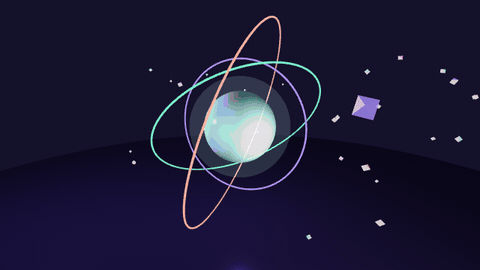
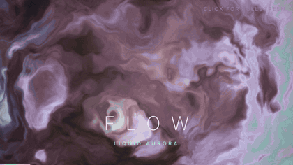
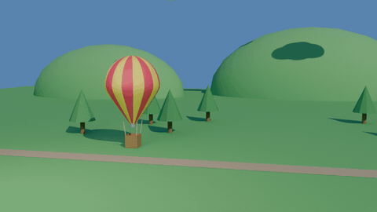

Hot-Air Balloon Lift-Off
A striped hot-air balloon lifts off over a valley of hills and pine trees. Every mesh, material, light, camera and keyframe is generated from one Blender Python script.
Real-time graphics experiments built with Three.js and raw WebGL shaders, plus a fully procedural 3D scene generated with Blender's Python API.



A striped hot-air balloon lifts off over a valley of hills and pine trees. Every mesh, material, light, camera and keyframe is generated from one Blender Python script.